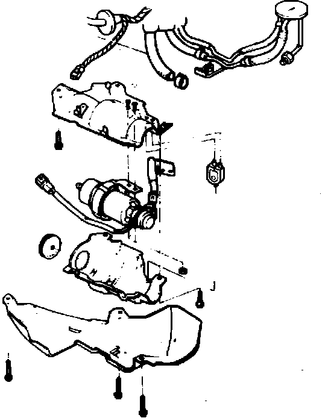

Fuel Pump: Service and Repair
Fig. 1 Relieving fuel system pressure:

1. Disconnect battery ground cable, then relieve fuel system pressure by loosening the service bolt on top of fuel filter, Fig. 1, one complete revolution.
Fig. 42 Fuel pump replacement. Integra:

2. Block front wheels, then raise and support rear of vehicle.
3. Remove left rear wheel and fuel pump cover, then the fuel pump attaching bolts and pump together with bracket, Fig. 42.
4. Disconnect fuel lines and electrical connector from pump, then remove pump from vehicle.
5. Remove fuel line and pulsation damper from pump. The fuel pump must not be disassembled.
6. Reverse procedure to install, noting the following:
a. Torque pulsation damper attaching nut to 20 ft. lbs.
b. Thoroughly clean flared fittings of fuel lines before reconnecting them.
c. Following installation, run engine and check fuel pump fittings for leaks.